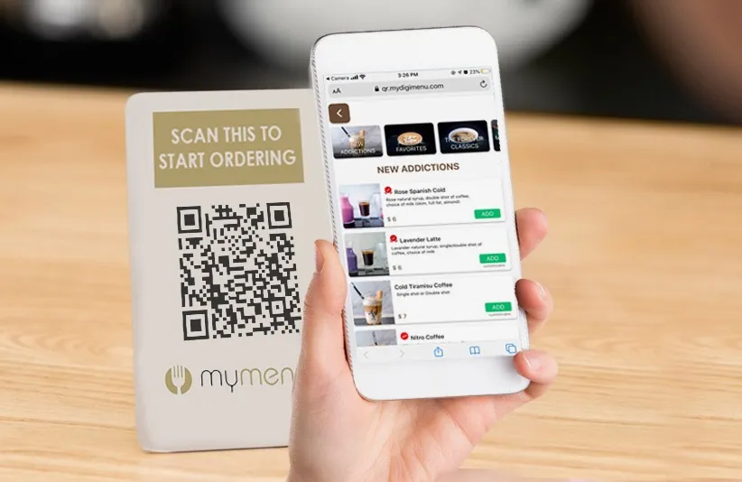
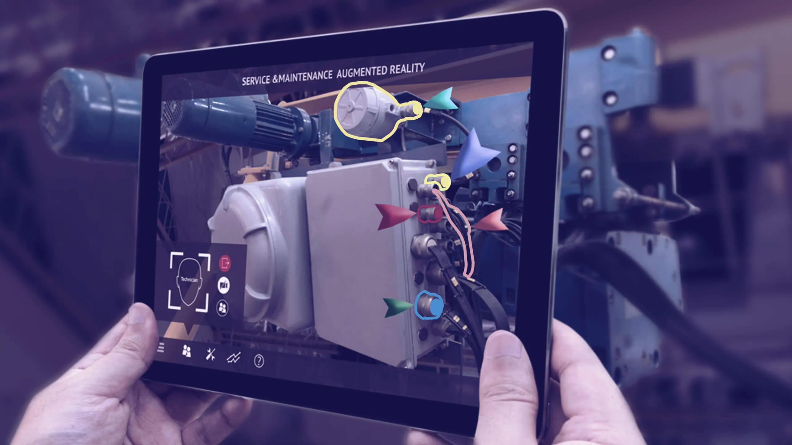

Queremos conocer tus proyectos

No cabe duda que el 2020 dejó una marca en todos nosotros. Sin importar la labor que realicemos; nuestra edad; género; o nivel socioeconómico, la crisis sanitaria provocada por el COVID 19 cambió nuestras vidas para siempre.
A la fecha de esta publicación, la pandemia aún no ha cedido.
Ésta crisis no durará para siempre. Sin embargo, nuestros usos y costumbres se adaptan al cambio, y cada uno de nosotros tuvimos que desarrollar nuevas formas de interactuar con el mundo a nuestro alrededor de forma segura, respetando los protocolos de sanidad y protección. Ya sea laborando y/o estudiando desde nuestros hogares echando mano de las herramientas de teleconferencia, realizando las compras mediante apps y web stores, o visitando lugares lejanos mediante recorridos virtuales, éstas nuevas costumbres se quedarán con muchos de nosotros y formarán parte de nuestra nueva realidad
El mercado, por supuesto, tuvo que adaptarse para sobrevivir.
Como sabemos, múltiples negocios sufrieron innumerables pérdidas al verse forzados a cerrar sus locales y enfrentar un decrecimiento en sus ventas y consumidores frente a plataformas digitales. Sin mencionar que una significativa cantidad de personas perdieron sus empleos o vieron sus sueldos reducidos.
Pero, como dijera aquella frase, “hay de todo en la viña del señor”.
Otras marcas, por su parte, aprovecharon todas las herramientas tecnológicas a su disposición para mantenerse a flote y ofrecer a sus clientes diversas formas de seguir interactuando y consumiendo su producto. Una de estas herramientas particularmente tuvo un resurgimiento conveniente; la Realidad Aumentada
Como hemos visto en entradas anteriores, el comercio con Realidad Aumentada ha ido en aumento desde inicios de los 2010 hasta la fecha, y la pandemia, en consecuencia, provocó un notable crecimiento y uso por parte de diversos comercios y sectores que decidieron dar el paso final a implementarla.
Desde códigos QR que envían el menú digital de un restaurante directamente a tu smartphone y empaques inteligentes que muestran todas las propiedades del producto que almacenan sin necesidad de tocar la caja, hasta los ya vistos catálogos virtuales que permiten ver la prenda que llama tu atención en diversos colores y tallas y el mueble de jardín que aún no decides si adquirir o no, la Realidad Aumentada nos brinda un mundo de posibilidades que satisface la necesidad humana de explorar y curiosear sin necesidad de estar presente en el sitio en cuestión.
Los museos y las firmas de bienes raíces también se vieron beneficiadas por la Realidad Aumentada y la Realidad Virtual. La industria de las bienes raíces e inmobiliarias desarrollaron aplicaciones para dispositivos móviles que pueden mostrar un modelo digital a escala desplegable de una construcción o inmueble en cualquier superficie, pudiendo exponer un proyecto terminado con dimensiones y divisiones modificables. En el caso de los museos, utilizaron una técnica llamada Fotogrametría; la cual consiste en tomar múltiples fotografías de un objeto o espacio para poder recrearlo en un modelo 3D completamente interactivo, pudiendo recorrer los pasillos del Museo Británico de Londres desde la comodidad de tu escritorio. La industria turística también ha echado mano de la técnica para llevar a potenciales visitantes en aventuras a distancia antes de que toquen tierra o reserven su pasaje.
Si bien las implementaciones más conocidas de la RA y la RV van enfocadas al comercio y al entretenimiento, hay un par de sectores que poco a poco han ganado terreno; la asistencia y el entrenamiento profesional.
Como mencionamos, la pandemia causó estragos en la población mundial; económica, física, psicológica, y emocionalmente hablando. Es así que métodos de tratamiento como la terapia de exposición cognitiva, la cual consiste en ayudar al paciente a enfrentar sus miedos y fobias en lugar de evadirlas, comienzan a utilizar los dispositivos con capacidades de Realidad Virtual para llevar a sus pacientes por el camino de la recuperación. Aunque aún en fases experimentales, ya hay terapeutas que han dado el salto, de forma notable al trabajar con pacientes con estrés post traumático. Así mismo, en el área médica, se entrena a trabajadores de la salud con escenarios virtuales para ensayar diversos escenarios a los que se enfrentarán, o probar nuevas técnicas, en un entorno seguro, inmersivo, y libre de posibles distracciones.
Por su parte, el área de asistencia ha llevado el soporte remoto al siguiente nivel.
En ocasiones, los expertos en respectivas áreas no siempre pueden trasladarse hasta el sitio donde ocurre una falla, ya sea por otras ocupaciones, distancia, o tiempo (y en el caso de la pandemia, por seguridad). Actualmente, hay varias herramientas disponibles que permiten ver en vivo y en directo cualquiera que sea el problema que un profesional enfrenta; en los hospitales, personal sin experiencia pudo reparar aparatos mediante la guía a distancia de un técnico especializado, que podía ver en su pantalla la maquinaria en cuestión y las partes que necesitaban ser reparadas o reemplazadas, arrojando de regreso la información a la persona encargada y guiando paso por paso.
Si bien las penurias que atravesó la humanidad desde hace casi año medio dejarán una profunda cicatriz en todos nosotros, no hay que olvidar la mayor herramienta con la que contamos como seres humanos; la capacidad de adaptarnos y sobreponernos a todos los obstáculos, aprendiendo de nuestras caídas, e implementando las técnicas que desarrollamos a lo largo del camino para un futuro más brillante.

Tehama St, Sn Francisco Cal,
USA +52 5628253489 MX

Puebla 237 Col Roma, CDMX
+52 5628253489 MX